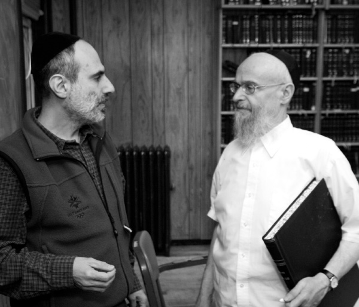

Recharge Yourself
A person can recharge by participating in a Chassidishe farbrengen. And on a daily basis, in order to maintain their charge and connection, Baalei Battim, married individuals, should maintain Kvius Itim LaTorah, set times for learning Torah. Bachurim should keep to their yeshiva’s daily schedule, to keep and increase in radiance. * Stories from a Farbrengen with Rabbi Yaakov Goldberg.
Transcribed and Adapted by Rabbi Bentzion Elisha

A WARM HOME, AN ILLUMINATING HOUSE
A few friends were discussing amongst themselves how to fix the marital problems they were experiencing. They decided to look into the treasure house of Rambam’s books for much needed advice.
One individual suggested that the book dealing with Nizikin-damages, would be the ideal place to look for the appropriate help. His reasoning was that since marriage is combative and is fraught with bitter arguments and is essentially a volatile power struggle in which serious damages resulted, the book of Nizikin would be the right place to find solace for their problems.
A second friend disagreed and suggested that they look in the book of Ahava, love, since marriage is about enjoyment and love.
A third fellow suggested that they would find the answer to their conundrum in the book of Nashim, women. Since marriage involves women, an entire book devoted to them should surely dispel any misunderstandings about the other gender’s nature.
A fourth guy negated the other three and stated firmly that the answer must be in the book of K’dusha, sanctification, since marriage is about and requires K’dusha, sanctity and holiness.
It goes without saying that the guy who thought marriage is a battle of wills, the fellow who equated marriage to a love affair and also the man that theorized that a good marriage caters to a spouse’s human nature were all unfortunately unsuccessful in their marriages.
The only one out of this entire bunch whose marriage made it past the challenges was the one who realized that a lasting marriage needs to be a dwelling place of K’dusha, holiness, a subjugation of the self for the benefit of the other.
I vividly remember the private audience my wife and I had with the Rebbe on the 19th of Av, 1967. It was just four days after we were engaged on Chamisha-Asar B’Av, the 15th of Av.
In the meeting, the Rebbe blessed us with these words: “Ayir Zalt Oiyfboyen A Varme Un A Lichtiker Shtub, Un M’zahl Heren Fon Aiych B’suros Tovos – May you build a warm and an illuminating home, and we should hear from you good tidings!”
Contemplating these two points I realize that it wasn’t only a bracha, a blessing, but also a directive which contained a formula for a successful marriage.
It isn’t enough to have a union in which only the individuals in the marriage are warm and comfortable. The house, the relationship, must be Lichtik, illuminating. A Jewish home should also cast an inspiring aura that changes the outside. Just like the Beis HaMikdash had windows that were “Shkufim Atumim,” they radiated the light to the outside world, so too it must be in a Jewish house. It should beam outwards with inviting, healing rays of light which brighten another’s experience with a helping hand.
Attaining warmth and light for oneself isn’t enough; one must share it with others.
When this condition is met, then K’dusha-holiness dwells there, and the couple attains a steadfast, everlasting light.
A FLAME FOR G-D
The Jewish people as a whole are also married; we are married to Hashem.
Our marriage occurred on the mount of Sinai at the historic event of Mattan Torah, the giving of the Torah to the Jewish people.
At this most auspicious and significant wedding of all time, Moshe was the Shoshvina D’Malka, the best man representing The King-groom, Hashem. The Shoshvina D’Matronisa, the bridesmaid of the queen the Jewish people, was Aharon.
The credentials for Moshe might speak for themselves to explain how he merited this prestigious honor. However, a person can wonder and ask: why did Aharon merit such a great honor as being the escort of the Jewish people on this momentous union?
In Likkutei Torah (pages 58-60) the Alter Rebbe makes a striking comparison between Avraham Avinu and Aharon that might shed some light on the subject.
Although they both exhibited extraordinary Chesed, kindness, the expression of generosity they displayed was very different.
Avraham as the first Jew spread the consciousness of One G-d versus the prevalent idol-worship in the world at the time. He would make his many guests give thanks to the Creator after partaking of meals that he served them and compel people to acknowledge the One Supreme Being.
Despite the giving nature of Avraham, we might still ask ourselves where Avrohom’s students are today. We can safely say that they are nowhere to be found.
After Avraham died his students disappeared. He gave and gave and gave some more. He never stopped giving. However, the “Nefashos Sh’Asu B’Charan,” the souls Sarah and he had touched and inspired, vanished after the contact with them was severed.
Aharon on the other hand had an entirely different approach.
In the Parsha of B’Haalos’cha, it says that Aaron elevated the candles on the menorah when he ignited them with a flame.
The menorah is representative of the Jewish people as a whole, while each one of its seven branches is compared to a certain type of Jew. The word used to describe this kindling is, B’Haalos’cha, which literally means to elevate.
He didn’t just light them; rather he toiled to elevate them so that they would be “a flame that burns independently of him.”
Aharon exerted effort in bringing out the Jewish people’s potential and empowered them through his teachings to be able to keep their inspiration alive by personal inner work of their own.
Interestingly, we are specifically instructed to emulate Aharon.
In Pirkei Avos (1:12), it is stated: “Hevei M’Talmidav Shel Aharon, Ohev Shalom, V’Rodef Shalom, Ohev Es Ha’brios, U’Mekarvan LaTorah – Be of the disciples of Aharon, loving peace and pursuing peace, loving your fellow creatures, and bringing them close to the Torah.”
Unlike Avrohom’s method, Aharon’s path does require of the recipient much effort and toil. Practically, how does an individual accomplish this? How do we keep the flame of devotion to G-d burning?
1. Let There Be Light
Inside the Shtender at Hadar Ha’Torah we have stored at least one hundred candles. These candles are identical to the ones lit on top of the Shtender during the Davening. However, there is one major difference – they are missing a flame and therefore they are not illuminating. They need to be kindled.
People, like candles, need to be kindled, otherwise they will not shine even though the potential is there…
There is a condition though, a prerequisite for this stimulated luminous life experience. An individual has to be willing to be “kindled” in order to become lit by an Aharon…
2. Harnessing Desire
The Zohar famously states that “Mo’ach Shalit Al HaLev – the mind rules over the heart.” However, the heart has some very powerful passions; therefore there is an ongoing struggle between the two as to who will prevail over the other.
There are two possible scenarios that can play out in the duel between the mind and the heart.
In the first scenario the heart leads the mind. A person will see something that jumpstarts the desire of the heart and then the heart introduces the mind to its cravings. This deceptive introduction has the goal of utilizing the mind to find justifications to obey and fulfill the heart’s wanton cravings.
The order of this sequence is Lev-heart, Mo’ach-mind, and then Kaved-liver. It begins with the heart’s wish, and then leads to the mind’s justification and excuse, and then the liver’s vivifying the body with blood, signifying action.
The acronym of this spells out Lemech.
Lemech is a character in the Torah who symbolized the epitome of failure and misfortune, having made tragic mistakes that cost a couple of his family members their lives, G-d Forbid.
A second scenario is made up of an entirely different order of events. In this second sequence the mind leads the heart. It reasons and comes to a decision of what is truly good. Then it involves the heart, harnessing it to utilize its characteristic trait of desire in order to help fulfill and obey the mind’s calculations.
The order of this scenario is Mo’ach-mind, Lev-heart, and Kaved-liver. The mind’s conclusions initiate the process, the heart’s passion carries it, and the liver brings those desires into action.
The acronym of this sequence spells out Melech, king. By aligning the mind with the Torah, the will of the King, an individual can triumphantly direct the desire of his heart and his actions on a G-dly path. Such a person is likened to a Melech, a king. This is the meaning of the saying in Pirkei Avos, “Who is a hero? He who rules over his desires.”
The choice between success and failure on our spiritual mission in life is presented again and again. It is the choice between failing by following the heart’s foolish trappings, being a Lemech, or winning by choosing to align the mind, heart and one’s actions with the King’s Supernal Will, and thus becoming like a heroic ruler, a Melech, a king.
3. Recharging Radiance
Last week I got a device called a cell phone. I put it in my pocket and every once in a while it makes a lot of noise and vibrates, insisting I pick it up. I take it in my hand and the screen on it is bright. I can easily reach or be reached now with this phone’s constant connectivity.
A few days after I had this phone I noticed it wasn’t making any sounds or vibrating. I took it out of my pocket and noticed its screen wasn’t bright any more. I told my wife that this new device is probably dead. My wife told me that the device has a battery and that the battery needs to be recharged.
I opened the box that it came in and found this charging instrument. I plugged this charger into the wall socket before I went to sleep and in the morning I placed the charged battery back in my phone. Amazingly enough, my phone’s screen was bright again, emitting light. The next time someone called, it produced its sounds and vibrated excitedly once more.
People are very much like cell phones.
When one’s battery is charged he can be full of radiance, emanating vibrations of inspiration to his surrounding environment. However, this battery over time does discharge. When it’s drained the person isn’t connected anymore, he becomes dull, quiet and dim. He isn’t radiant anymore.
How does one recharge?
A person can recharge by participating in a Chassidishe farbrengen. And on a daily basis, in order to maintain their charge and connection, Baalei Battim, married individuals, should maintain Kvius Itim LaTorah, set times for learning Torah. Bachurim should keep to their yeshiva’s daily schedule, to keep and increase in radiance.
By utilizing these ‘chargers’ continuously, the constant connection is certain to last.
A TALE OF TWO KUGELS
A young couple came to a Rov one time, upset and emotional, declaring they wanted to divorce. The Rov invited them to sit and tell him all about their marital problems that had led them to this drastic decision. After a little investigating the Rov found the root of the problem.
Apparently the Shabbos kugel was guilty of coming between these two newlyweds. In honor of the holy Shabbos the wife would make a delicious kugel to fulfill the verse saying “Meangeha L’olam Kavod Yinchalu – those who delight in the Shabbos will inherit eternal glory.” The husband was meticulous about the Halacha which states that a person should taste from the foods of Shabbos on Erev Shabbos. He was especially enthusiastic about it since he wanted to fulfill “Toameha Chaim Zachu – those who taste from these (Shabbos foods on Erev Shabbos) will merit eternal life.”
He was adamant about beautifying this Mitzvah, inspired by the verse “V’Gam HaOhavim D’vareha Gedula Bacharu – even those who love its precepts have chosen a great portion.”
It wasn’t enough for him to have just a little piece… A great big portion or even two or three big pieces weren’t enough either… He would eat the whole kugel!
The woman was upset since she had no kugel to serve on Shabbos. The husband was upset because he wanted to eat the entire kugel Erev Shabbos. The Rov thought about this major dilemma and then advised the couple: The solution for this is a simple one. Why don’t you cook two kugels? One will be for Erev Shabbos and one will be for Shabbos. This way both of you will be happy!
This year is 5773 years since Creation; we are undeniably living in an era that is deemed Erev Shabbos, the afternoon before the Shabbos of creation, the Messianic Era.
During the Messianic Era there will be an abundant amount of delicacies served. These delicacies are the revelations of the inner aspects of Torah, its inner dimension, an amazing revelation of G-dliness. It’s a Mitzvah to eat delicacies of Shabbos before Shabbos. These delicacies, these revelations, are served in Chasidic teachings.
Hashem has generously prepared and created two “kugels,” one for Shabbos and one for Erev Shabbos. There is no doubt that the “kugel” for Shabbos is phenomenal; however a similar “kugel” is being served now on the platter of Chassidus.
We don’t have to fear of eating the entire “kugel.” Hashem has made another one especially for Shabbos. Each one of us is invited to eat the “kugel” prepared especially for Erev Shabbos, pure revelations of G-dliness, now.
We are given the delicacy of Chassidus for us to consume completely!
AN ESSENTIAL REVELATION!
The Talmud (Shabbos, 95a) adds a new dimension to the word “Anochi” which appears in the very first of the Aseres HaDibros, the Ten Commandments: “Anochi Hashem Elokecha – I am the L-rd, your G-d.” It reveals that the acronym these letters stand for is “Anochi Nafshi Kesavis Y’havis – I placed myself in these writings.”
Hashem declares that He puts his very self into the Torah! If we take a moment to reflect upon and internalize what that actually means, we would understand that by learning Torah we are dealing with the Creator Himself intimately, face to face!
When we learn Torah we are connecting and uniting with Hashem’s Ratzon HaElyon, Supernal Will. When we learn Chassidus, the inner aspect of Torah, we are internalizing the inner aspects, the essence of Hashem!
Isn’t this just astounding? Isn’t this awe-inspiring?
Some people emphasize that the reward for Torah and Mitzvos will be L’Asid Lavo, at the time of the complete redemption, or in Gan Eden. Practically, that means that their learning of the Torah and the performance of the Mitzvos are like an unwanted burden which an individual will perform just because of the reward he will get later. An example of this could be an uninspired worker who is stuck in a job he doesn’t like yet holds unto it only for the paycheck.
Chassidus revealed a completely different perspective in which the emphasis is that the reward is now!
“S’char Mitzvah, Mitzvah – the reward of a Mitzvah is the fulfilling of the Mitzvah itself.” When we learn Torah, the “Anochi” dwells within us and is like consumed bread which becomes one with our flesh; this is an amazing union with the Almighty.
Even though now we don’t sense it, the learning of Torah equals and elicits a revelation of Hashem. We are “paid” now; the payment is the amazing privilege to actually fulfill the Master of the Universe’s Supernal Will. What an incredible fact!
When a person is learning Torah that is a great accomplishment! When an individual learns, he transforms a mere day into a successful one.
What greater accomplishment and success in a person’s day is there if not for the involvement with Hashem personally?
You don’t have to wait for a fuller grasp in some future time; you can start to taste the labor of your fruits today, when you learn Torah, right this very moment!
In light of the Chasidic teachings on the subject, the question a person should ask himself is not “Did I learn Torah today or not?” The question ought to be, “How many times did I learn Torah today?”
BEYOND DOUBT OR REASON
The second chapter of Pirkei Avos starts with the words “Rebbe Omer – Rebbe says.” After that it continues with many golden teachings, but the very first words are “Rebbe says.”
This teaches us how to approach the Rebbe, his teachings, directives and campaigns. The reason for our adherence should simply be because “Rebbe says!” We shouldn’t depend on our limited and biased understanding to make decisions, picking and choosing what seems good to us.
There is no need to afford great attentions to doubts, delving into elaborate debates and explanations, searching if a teaching or Horaa-directive is perfectly tailored to our personal comfort zones or proclivities. We must disregard our personal agendas.
It’s in our best interest to subdue ourselves to the authority of the Rebbe. When we nullify ourselves to the Rebbe, it in turn helps us to be nullified to what the Rebbe is nullified to. And when we bond ourselves with the Rebbe, it enables us to be bonded with what the Rebbe is bonded with.
We must realize the Rebbe’s far reaching vision truly encompasses ‘the big picture’ far beyond that which we can fathom. We can compare this to a child who must trust that the parent knows best even though he might not fully understand the reason. If a child questions the parent on every little thing he does or says, as is so common here in America, it could be quite disastrous.
The Rebbe is our father and our mother! We are given the merit to choose to be a smart child and trust the Rebbe’s words without question. We can be assured that his instruction is for the ultimate good in general and also in particular for us on a personal level.
Any contrary claim, doubt or hesitation should be quickly stamped out with the firm answer “Because the Rebbe says so!” Likewise, as we follow the Rebbe’s path, we shouldn’t do so because of our grasp or comprehension in whatever matter, but solely because “the Rebbe says so!”
A PERMISSIBLE DESECRATION
It is written that “Sheina B’Shabbos Taanug – sleeping on Shabbos is a pleasure.” Many people enjoy observing this special “Mitzvah” and sleep during the Shabbos afternoon. When a Farbrengen happens on Shabbos some people are tempted to forgo the Farbrengen since the Mitzvah of sleeping on Shabbos is so great and the Farbrengen would become a clear obstacle to its fulfillment.
Another Halacha states that you may violate the Shabbos to save a life. The rationale behind this is that you are violating one Shabbos in order to enable the individual to observe many Shabbasos in the future.
We can apply this Halacha to those who abstain from Shabbos farbrengens in order to fulfill the essential mitzvah of sleeping on Shabbos. To them we can say, “Violate your Shabbos, your special Mitzvah of sleeping, so you can enable yourself to have many more inspired Shabbasos!”
In addition to the great adherence to this Mitzvah of sleeping, other holy excuses can come up, buttressed with substantial legitimate claims such as “it is very important to spend time with one’s wife and kids,” or ‘”my wife will miss me,” etc.
To pre-empt these kinds of claims, I assure you that by participating in a Chassidishe Farbrengen or a Shiur, not only will your family survive and not think less of you for being absent, on the contrary. Since you will be enlivened and awakened by it, your wife and children will admire you!
A LASTING RESOLUTION
At the conclusion of a Farbrengen we must pinpoint something to take away from it to implement into our lives. Regardless of what you choose to take with you, I’d like to highlight the importance of learning Chassidus. Aside from it being a Gilui Elokus, a revelation of G-dliness, it solidifies and internalizes the awareness of “Ani Hashem Elokechem Emes – I the L-rd your G-d am the truth.”
It is vital to learn Chabad Chassidus every single day!
***
Rabbi Yaakov Goldberg is an admired and beloved educator who merited to be called a Lamdan, a diligent scholar, by the Rebbe. He is the Rosh Yeshiva of Hadar HaTorah and a Meishiv in Tomchei T’mimim in 770.
Hadar HaTorah is the world’s first Baal T’shuva Yeshiva (for Jewish men with little or no formal background in Jewish knowledge or practice) literally transforming thousands of lives since its founding in 1962.
The program offers full time and part time curriculums as well as shorter learning retreats such as Yeshiva Shabbos and the ten day Yeshivacation, both in Brooklyn (winter) and their Catskill Mountains campgrounds(summer).
Telephone (718) 735-0250
HadarHatorah.org
Rabbi Bentzion Elisha is an award winning photographer and writer based in Crown Heights, Brooklyn.
Beis Moshiach (staff). "Recharge Yourself." Beis Moshiach, no. 884 (June 20, 2013).